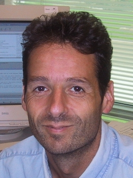
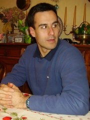
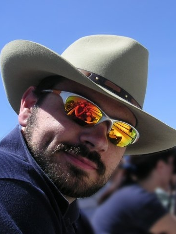
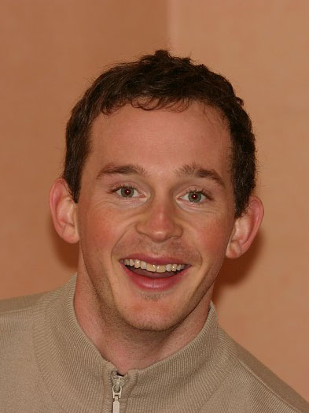

OpenDS Project Who's Who
OpenDS Project Who's Who |
| Person | Bio | Photo |
|---|---|---|
| Jerome Arnou jarnou@dev.java.net |
During his 6 years working for Sun Microsystems, Jerome has worked in the identity space. He first contributed to the Sun Java System Directory Server where he worked in the core server area (dsml frontend, identity mapping, chaining backend, sasl integration, moddn support, migration). Then he worked on the Sun Java System Directory Proxy Server, focusing on the virtualization, access controls and distribution features. When he's not working Jerome enjoys mountaineering in the Alps, collecting crystals (he's a rockhound), and spending time with his family. |  |
| Gilles Bellaton gbellato@dev.java.net |
After several jobs in the networking area, Gilles became a developer with the Directory Server product team at Sun Microsystems in 1998. He has worked on the front-end, backend, and replication modules of Sun Java System Directory Server. When he is not in front of a computer and not spending times with his two kids, Gilles likes wandering in the Alps practicing backcountry skiing, canyoning and other mountain activities. |  |
| Sarah Chapman sarah.bown@sun.com |
Prior to joining Sun, Sarah worked for several CRM start-ups as product manager. More recently, she was one of the first product managers for Java Enterprise System, then went on to do Partner strategy for the Application Platform suite and is currently a product manager for OpenDS. She has done studies both at the University of Vermont and the University of San Francisco. Sarah has maintained her interest in snowboarding, skiing, playing volleyball, and running and lives in Chicago with her husband and two dogs. | |
| Andy Coulbeck coulbeck@dev.java.net |
Andy has worked on Directory technology for far longer than he cares to mention, contributing to the development of the LDAP protocol standards in the late 1990's, in particular as co-author of RFC 2252. His main area of expertise is the use of embedded databases to provide fast, robust LDAP Directory Servers, having done such for Isode, Innosoft and most recently at Sun Microsystems. Outside of work, Andy is a soccer addict and also enjoys scaring himself flying small airplanes. |  |
| Mark Craig mkc@dev.java.net |
Mark has led Sun's major directory server documentation efforts since the close of iPlanet Directory Server 5.1 in 2001. He writes primarily for directory application developers and directory administrators. Let Mark know if you do not find what you are looking for in the documentation. In his free time, Mark enjoys running, reading, cycling, and philosophy. |  |
| Trey Drake treydrake@dev.java.net |
Trey recently re-joined Sun Microsystems as the OpenDS Community Leader and is focused on developing the open source community. He has a wide variety of software development experience in both management and engineering. In the off hours you're likely to find Trey (and probably his wife too) scuba diving or hiking around Austin. | |
| Brian Ehret behret@dev.java.net |
Brian joined Sun Microsystems as a User Interface Designer in 1999. He's designed and usability tested system management tools for several Sun Products, and most recently was design lead for the Directory Service Control Center, a web browser based administration tool for managing Sun Java System Directory Server 6 and Directory Proxy Server 6. Brian has a Ph.D. in Psychology with a specialization in Human-Computer Interaction from George Mason University. He despises running and thoroughly enjoys cruising atop the (usually) fluffy powder at Colorado's ski resorts. | |
| David Ely davidely@dev.java.net |
During his five years at Sun Microsystems, David has worked in the identity space, first with Sun's Identity Synchronization for Windows product and then with Sun's Identity Manager. His focus has been on managing the delivery of high-scale and high-availability systems. When he's not working, David enjoys running, listening to a variety of music, and spending time with his lovely wife and two amazing daughters. | |
| Mike Keyes el_kaboing@dev.java.net |
After joining Sun Microsystems five years ago, Mike has worked in the areas of performance measurement of Directory Server, the development of the ldap jdk and the dsrk developer's toolkits for Directory Server, and Quality Assurance for the first release of Sun Java System Identity Synchronization for Windows. During each fall and spring semester, Mike teaches evening courses in environmental science and general chemistry at a local community college. After retiring from running half-marathons for many years, Mike has embraced bicycling to round off his activities. |  |
| Arnaud Lacour al_xipe@dev.java.net |
Since he joined Sun in 2003, Arnaud has consistently worked on making products more resilient. First with Calendar Server, then Instant Messaging and most recently with Directory Server and Directory Proxy Server. He's put his energy into providing the team with tools and practices that do just that. To put his brains to rest, Arnaud spends time hiking up the French Alps with a telescope in his back pack. |  |
| Kevin Lemay klemay001@dev.java.net |
Kevin is a Senior Technical Product Manager for Sun Java System Directory Server Enterprise Edition. Kevin has specialized in Directory and Identity related technologies for the past 9 years and has been at Sun for 6 years. Kevin has played a number of roles within Sun from Professional Services to Engineering Management and now in Product Marketing. Prior to joining Sun Microsystems Kevin was a principal in a Calgary-based consultancy firm specializing in Internet and Enterprise Networking technologies, including Netscape, Sun and Novell infrastructure products. During this time Kevin worked with Financial and Insurance clients and some of Canada's largest oil and gas organizations. Kevin is Canadian which pretty much says it all. He enjoys the outdoors and likes to spend time mountain biking, traveling and skiing either on water or frozen water. |  |
| Bo Li | Bo joined Sun in 2004 as a lab admin for the Identity Management and Directory Server development teams. While studying for his Computer Science degree at the University of Texas at Austin, he conducted research on semantic databases implemented with Berkeley DB Java Edition. Currently, he is part of the OpenDS team working on support, development, and performance analysis. Out of office, Bo enjoys hanging out with his friends, driving, working out, and being outdoors. | |
| Daniel Lutoff lutoff@dev.java.net |
During his ten years at Sun Microsystems, Daniel has worked in the system and network management space, mainly in the telco domain and for Java platform management (JMX). Since 2002 he's focused on providing a high-quality management solution in the identity space, especially for the Sun Java System Directory server. When he's not working, Daniel enjoys spending time with his family and his friends. |  |
| Vivek Nagar vnagar@dev.java.net |
Vivek has worked on server side technologies and products for the last 14 years. An original member of the J2EE engineering team, Vivek has worked on various Java based enterprise software products including the Application Server, Web Server and Directory Server. Vivek enjoys reading and watching cartoons with his kids. | |
| Ludovic Poitou (owner) ludovicp@dev.java.net |
Ludovic is an Architect in the Directory engineering team, based in Grenoble, France. For the last 11 years, Ludovic has been designing and developing the Sun Directory products working in all areas from management tools, to protocols, security and multi-master replication. Ludovic has participated in the LDAP standards at IETF and the Directory Interoperability Forum from The Open Group. Prior to joining Sun Microsystems, he was a developer of ISO based Messaging and Directory products in a french startup (E3X) in Sophia Antipolis - France. In his free time, Ludovic enjoys hiking, telemark skiing, reading, gardening, and most of all spending time with his lovely wife and three daughters. | |
| Etienne Remillon etienne38@dev.java.net |
Etienne is a Senior Product Manager for Sun Java System Directory Server Enterprise Edition. For the last 15 years, Etienne has been specializing in directory and related technologies at Sun Microsystems. Prior to joining Marketing, Etienne held a Project Management position in the Sun France sales organization in charge of large Telecommunication Equipment providers and operators. His expertise is on the Sun Java System Directory Server Enterprise Edition collection of products, with good knowledge of identity related topics for Telecommunications. Etienne enjoys traveling, meeting people around the world, and skiing in the French Alps. |  |
| Stephen Shoaff sshoaff@dev.java.net |
Stephen is currently the Director of Engineering for the Directory products at Sun Microsystems. His previous roles at Sun were Technical Director for Identity Management and head of the Deployment Engineering teams. Prior to joining Sun, Steve was at Netscape Communications working on Directory first in Professional Services and then as the Product Line Manager. His participation with Open Source began with another java.net project, SLAMD. Steve's real job though is helping his wife survive their young triplets and their older sister. |  |
| Kenneth Suter kenneth_suter@dev.java.net |
Since joining Sun in 2000 and in his work with Innosoft and Tivoli before then, Kenneth has worked on several directory and identity products including Sun's Directory and Proxy Servers and Identity Manager. Specializing in user interfaces of all kinds, he values intuition, simplicity, and reliability. When not working he enjoys music, cooking, gardening, politics, history and spending time with his wife and daughters. | |
| Matt Swift matthew_swift@dev.java.net |
Matt has been working in the Directory Service space since he was in diapers^H^H^H^H^H^H^H since he left university 11 years ago. He was originally based in the UK where he worked for 8 years at Isode Ltd on their X.500/LDAP Directory Server product. More recently he has been part of the LDAP Directory Server core team at Sun in Grenoble, France. Outside of work, Matt is passionate about his family, the outdoors, and anything cycling related, although he has given up all hopes of becoming a Tour de France cyclist! |  |
| Josu Vergara Josu Vergara |
Since joining Sun Microsystems in 1999, Josu has been fighting rebel pixels in his attempt of creating graphical interfaces for the iPlanet and Sun Java Directory Server. He spends most of his free time thinking what to do with his free time and quite often concludes that listening to music or enjoying a football game is the way to go. | |
| Gary Williams gary_williams@dev.java.net |
During his six years at Sun Microsystems, Gary has worked for QA the different versions of the Sun Directory, putting in place a reliable development and QA process for the team. As a Senior QA engineer he lead the effort of testing the core/replication feature. Previously, he was the lead QA engineer on the Isode Ltd X500/LDAP Directory Server product for several years. In his free time, Gary loves playing football, getting injured as a result of playing football, and spending every spare weekend doing DIY on his house. | |
| Neil Wilson neil_a_wilson@dev.java.net |
Neil has been an engineer at Sun Microsystems since 2001, where he has focused on Directory Server support, development, and performance analysis. Prior to joining Sun, he worked for Netscape as a technical support engineer for the iPlanet Directory Server, and before that served as a directory and web services administrator. Neil is also the primary developer and maintainer for the SLAMD Distributed Load Generation Engine, and authors the "cn=Directory Manager" blog. In his spare time, he enjoys watching movies, reading, and keeping up with the latest advancements in science and technology. |